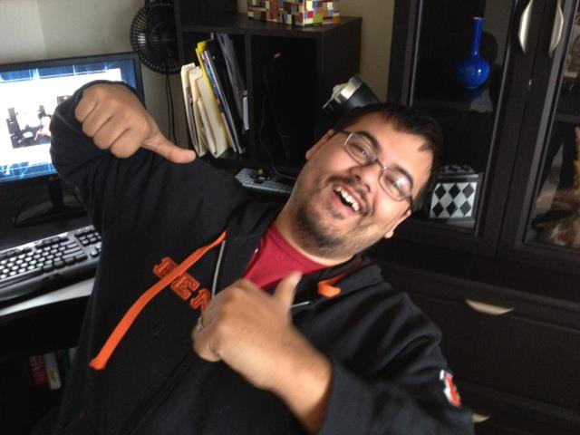

“People think that computer science is the art of geniuses but the actual reality is the opposite, just many people doing things that build on each other, like a wall of mini stones.” – Donald Knuth
My name is Josh, and I enjoy web development. I graduate from Wright State University's computer science program in May 2015, and it cannot come any sooner. The excitement to start my career as a developer has been building up for a while. The world is going, scratch that, is online, and I want to be a greater part of that. I want to help move software solutions to the web, and create great apps that are easily accessible.
I truly enjoy what I do. I spent two years with the Air Force Research Lab's Discovery Lab branch, working a lot of web development, hardware, and 3D printing projects. That internship spawned a hobby in me that was just waiting to come out. The pairing of creativity with technology is a blast, and I get to call that my profession. Who says you can't love what you do?
I have a lot of career expectations. Yes having a good paycheck is nice, but more than that I want to be happy. I want to fuel my passion with the work I do, and I want to enjoy it with my family, friends, and coworkers. Being able to interact with people, develop great apps, and be proud of what I do is invaluable in what I would like from my career.
